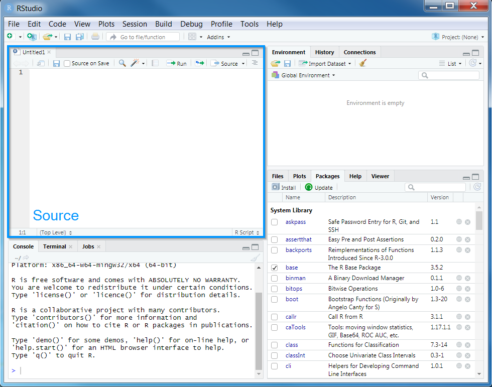

Chapter 3 Redo Marxan analysis
3.1 Introduction
Before we begin to prioritize areas for protected area establishment using the full feature set of prioritizr, we will re-do the Marxan analysis from Tuesday in prioritizr. This exercise is meant to show you how you can use your current Marxan files in prioritizr, if you choose to do so. Once we have run the example using input.dat, as well as the individual .dat files, we will also work on preparing the data you worked with on Monday to be used in prioritzr. Once that’s complete, we will run our first prioritizr analysis, using the notation typical for prioritizr analysis.
3.2 Starting out
We will start by opening RStudio. Ideally, you will have already installed both R and Rstudio before the workshop. If you have not done this already, then please see the Setting up your computer section. During this workshop, please do not copy and paste code from the workshop manual into RStudio. Instead, please write it out yourself in an R script. When programming, you will spend a lot of time fixing coding mistakes—that is, debugging your code—so it is best to get used to making mistakes now when you have people here to help you. You can create a new R script by clicking on File in the RStudio menu bar, then New File, and then R Script.

After creating a new script, you will notice that a new Source panel has appeared. In the Source panel, you can type and edit code before you run it. You can run code in the Source panel by placing the cursor (i.e. the blinking line) on the desired line of code and pressing Control + Enter on your keyboard (or CMD + Enter if you are using an Apple computer). You can save the code in the Source panel by pressing Control + s on your keyboard (or CMD + s if you are using an Apple computer).

You can also make notes and write your answers to the workshop questions inside the R script. When writing notes and answers, add a # symbol so that the text following the # symbol is treated as a comment and not code. This means that you don’t have to worry about highlighting specific parts of the script to avoid errors.
# this is a comment and R will ignore this text if you run it
# R will run the code below because it does not start with a # symbol
print("this is not a comment")## [1] "this is not a comment"# you can also add comments to the same line of R code too
print("this is also not a comment") # but this is a comment## [1] "this is also not a comment"Remember to save your script regularly to ensure that you don’t lose anything in the event that RStudio crashes (e.g. using Control + s or CMD + s)!
3.3 Attaching packages
Now we will set up our R session for the workshop. Specifically, enter the following R code to attach the R packages used in this workshop.
# load packages
library(tidyverse)
library(prioritizr)
library(rgdal)
library(raster)
library(rgeos)
library(mapview)
library(units)
library(scales)
library(assertthat)
library(gridExtra)
library(data.table)
library(readxl)3.4 Base analysis on input.dat
Now we will redo the Marxan analyis you have done on Tuesday, but using prioritzr. To do so we need the Marxan database you used on Tuesday, as well we the raw data you used on Monday. The files for both are already included in the R Studio project you received for this exercise. Now please open the PacMara_workshop.Rproj file by double clicking it. You are now ready to start with the exercise.
First, we are going to use the information from the input.dat file to run the analysis you completed on Tuesday, using prioritzr. To do so, all you need to do is point to input.dat and tell prioritizr where to find it. Once that’s done we can generate the problem and solve it.
input_file <- "Marxan_database/input.dat"
p1 <- marxan_problem(input_file)
s1 <- solve(p1)Next, we are going to have a look at the solution and explore the output by first displaying a couple of rows from the output data, then counting the number of planning units in the solution and calcualating the proportion of planning units in the solution.
head(s1)## id cost status locked_in locked_out solution_1
## 1 1 2000000 0 FALSE FALSE 1
## 2 2 2000000 0 FALSE FALSE 1
## 3 3 2000000 0 FALSE FALSE 1
## 4 4 2000000 0 FALSE FALSE 1
## 5 5 2000000 0 FALSE FALSE 1
## 6 6 2000000 0 FALSE FALSE 1# count number of planning units in solution
sum(s1$solution_1)## [1] 3262# proportion of planning units in solution
mean(s1$solution_1)## [1] 0.2683669Next we are going to explore how well the features are represented in the solution.
# calculate feature representation
r1 <- feature_representation(p1, s1[, "solution_1", drop = FALSE])
print(r1)## # A tibble: 19 x 3
## feature absolute_held relative_held
## <chr> <dbl> <dbl>
## 1 0-20 Hard 213510000 0.300
## 2 0-20 Muddy 145420000 0.302
## 3 0-20 Sandy 45810000 0.301
## 4 20-50 Hard 842380000 0.300
## 5 20-50 Muddy 120580000 0.300
## 6 20-50 Sandy 93400000 0.300
## 7 200+ Hard 136480000 0.300
## 8 200+ Muddy 870960000 0.300
## 9 200+ Sandy 1075960000 0.300
## 10 200+ UnId 2025510000 0.300
## 11 50-200 Hard 2151230000 0.300
## 12 50-200 Muddy 1080500000 0.300
## 13 50-200 Sandy 3347250000 0.300
## 14 50-200 UnId 3260000 0.337
## 15 iba 1991070000 0.300
## 16 kelp 51940000 0.305
## 17 killer whale 1596950000 0.386
## 18 sealions 697060000 0.494
## 19 seaotters 1596000000 0.3Finally, we are going to visualize the solution by converting the solution to a spatial object.
pulayer <- readOGR("Marxan_database/pulayer/pulayer_BC_marine.shp", stringsAsFactors = FALSE)## OGR data source with driver: ESRI Shapefile
## Source: "/home/travis/build/prioritizr/PacMara_workshop/Marxan_database/pulayer/pulayer_BC_marine.shp", layer: "pulayer_BC_marine"
## with 12155 features
## It has 1 fields
## Integer64 fields read as strings: PUIDpulayer1 <- pulayer
pulayer1$solution_1 <- s1$solution_1
pulayer1$solution_1 <- factor(pulayer1$solution_1)
spplot(pulayer1, "solution_1", col.regions = c("grey90", "darkgreen"),
main = "marxan_problem solution")Now, think about the following questions.
- Are the results from Marxan and prioritizr the same/similar?
- If you see differences, why do you think those differences occur?
- Can you think of ways to reduce difference/improve outcomes?
3.5 Base analysis using individual .dat files
Now, lets redo the analysis, but instead of using input.dat, we will use the individual .dat files to create the problem. You will see that the syntax for the problem formulation is very similar, but instead of supplying one value to the marxan_problem function, we now specify pu, spec, puvsp and bound. If you want to learn more about the marxan_problem function, just type in ?marxan_problem and you can have a look at the function help page.
pu <- fread("Marxan_database/input/pu.dat", data.table = FALSE)
spec <- fread("Marxan_database/input/spec.dat", data.table = FALSE)
puvsp <- fread("Marxan_database/input/puvsp.dat", data.table = FALSE)
bound <- fread("Marxan_database/input/bound.dat", data.table = FALSE)
p2 <- marxan_problem(x = pu, spec = spec, puvspr = puvsp)
s2 <- solve(p2)
# count number of planning units in solution
sum(s2$solution_1)## [1] 3261# proportion of planning units in solution
mean(s2$solution_1)## [1] 0.2682847# calculate feature representation
r2 <- feature_representation(p2, s2[, "solution_1", drop = FALSE])
print(r2)## # A tibble: 19 x 3
## feature absolute_held relative_held
## <chr> <dbl> <dbl>
## 1 0-20 Hard 213530000 0.300
## 2 0-20 Muddy 145420000 0.302
## 3 0-20 Sandy 45940000 0.302
## 4 20-50 Hard 842510000 0.300
## 5 20-50 Muddy 120590000 0.300
## 6 20-50 Sandy 93640000 0.301
## 7 200+ Hard 136630000 0.300
## 8 200+ Muddy 871080000 0.300
## 9 200+ Sandy 1075970000 0.300
## 10 200+ UnId 2025510000 0.300
## 11 50-200 Hard 2150800000 0.300
## 12 50-200 Muddy 1081840000 0.301
## 13 50-200 Sandy 3347430000 0.300
## 14 50-200 UnId 3260000 0.337
## 15 iba 1992240000 0.300
## 16 kelp 51570000 0.303
## 17 killer whale 1594570000 0.385
## 18 sealions 702660000 0.498
## 19 seaotters 1596000000 0.33.6 Recreate the Marxan analysis starting from the raw data
Now that we have solved a problem that was formatted the way Marxan needs data, lets go ahead and start from the raw data, as you did on Monday.
We will first process the data, so we can use it in prioriztr and then we will create the problem and solve it in the ‘standard’ prioritizr way.
Starting with the raw data from folder Marxan_Data we will go ahead and create our problem. First, lets load all the data we need in terms of features:
# We first load this Excel file to extract feature names later
feat_ids <- read_xlsx("Marxan_Data/conservation_feats_ids.xlsx")
# now lets load all the rasters we need
iba <- raster("Marxan_Data/iba_bc.tif")
kelp <- raster("Marxan_Data/kelp_bc.tif")
killerw <- raster("Marxan_Data/killerwhale.tif")
seal <- raster("Marxan_Data/sealions.tif")
seao <- raster("Marxan_Data/seaotter.tif")
benthic <- raster("Marxan_Data/benthic14cl.tif")
# benthic and the rest of the rasters are not exactly in the same format (same number of rows and columns)
# so we need to go ahead and make sure benthic has the same format as the other rasters.
benthic <- resample(benthic, iba, method="ngb")Now that we have loaded all the feature data into R, we need to go ahead and create the benthic classes, you have used to setup the Marxan problem before. This is specific to the way the benthic raster is setup and will differ from case to case in real world examples you might explore in the future.
In this specfic case, we know that benthic has a total of 14 classes, so the R code below does split the benthic raster up into 14 rasters, based on cell values, and at the end puts them together in a stack.
benthic_values <- values(benthic)
ben_list <- list()
for(ii in 1:14){
tmp_r <- benthic
tmp_r_val <- benthic_values
tmp_r_val <- ifelse(tmp_r_val == ii, 1, NA)
values(tmp_r) <- tmp_r_val
ben_list[[ii]] <- tmp_r
rm(tmp_r, tmp_r_val)
}
ben_stack <- stack(ben_list)Now that all rasters have been created, we can combine them in a stack and give them the names from the Excel file we read in earlier.
features <- stack(ben_stack, iba, kelp, killerw, seal, seao)
names(features) <- feat_ids$New_NameNext, we load in the fishcost layer and also resample it to fit the rest of the raster layers.
fishcost <- raster("Marxan_Data/fishcost.tif")
fishcost <- resample(fishcost, iba, method="ngb")Now its time to setup the prioritizr problem. As a first step, we are reading in the pulayer from the Marxan_database. I’m doing this to show you a nice way to setup the prioritizr problem, using a shapefile directly in the problem function call. We need to extract the fishcost data to that pulayer, before we can use this information in the problem formulation.
pulayer <- readOGR("Marxan_database/pulayer/pulayer_BC_marine.shp", stringsAsFactors = FALSE)## OGR data source with driver: ESRI Shapefile
## Source: "/home/travis/build/prioritizr/PacMara_workshop/Marxan_database/pulayer/pulayer_BC_marine.shp", layer: "pulayer_BC_marine"
## with 12155 features
## It has 1 fields
## Integer64 fields read as strings: PUIDpulayer$cost <- as.vector(fast_extract(fishcost, pulayer))Now for the actual problem formulation. You will see that we use the pulayer as one of the inputs to the problem function. As pulayer is a shapefile, we need to tell prioritzr which attribute to use as the cost column. We also include the features raster stack directly in the problem function. We also set the objective function (minumum set), the relative targets (0.3 or 30% of each feature), and the decision type (binary for integer linear programming).
When that’s done we can solve the problem.
p3 <- problem(pulayer, cost_column = "cost", features = features, run_checks = FALSE) %>%
add_min_set_objective() %>%
add_relative_targets(0.3) %>%
add_binary_decisions()
s3 <- solve(p3)As we have done before, we will now go ahead and extract summary statistics as well as plot the results. We just worked through an entire prioritzr problem, from reading and processing raw data to setting up and solving a problem, to extracting statistics and spatial visualization of results.
# count number of planning units in solution
sum(s3$solution_1, na.rm = TRUE)## [1] 2332# proportion of planning units in solution
mean(s3$solution_1, na.rm = TRUE)## [1] 0.1919816s3$solution_1 <- factor(s3$solution_1)
spplot(s3, "solution_1", col.regions = c("grey90", "darkgreen"),
main = "problem solution")